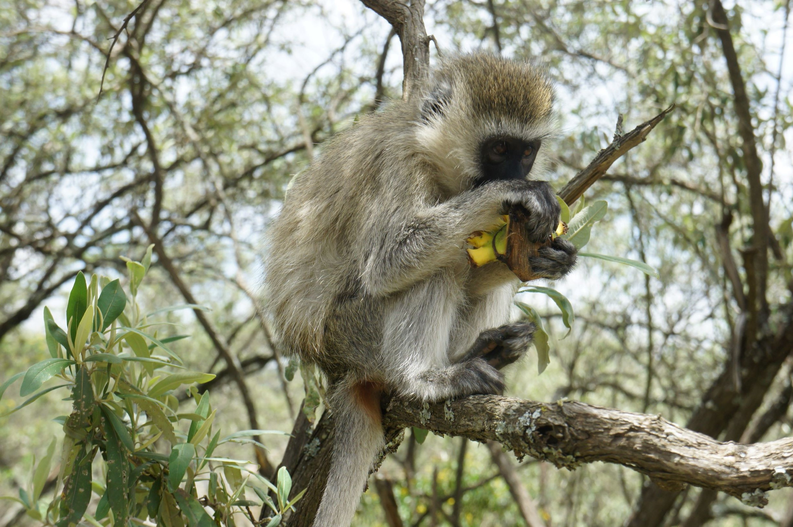

Places I visited
- We landed in Nairobi, after a long flight (3 films worth).
- The first few days, our host Mr Marshall, showed us around Nairobi.
- We visited the local shoping arcades, where we attempted to haggle, and the lushous parks - which were full of cheecky monkeys!
- Soon it was time for a big hike up Mt Longonot, an inactive volcano. The journey was indeed long.


We were able to visit the Nairobi National Museum which holds the skeleton of Lucy, Australopithecus Afarensis, our common ancestor and one of the earliest Bipeds!
Next we embarked on a cycle Safari, getting close to the animals and ending up at natural hot spring!
One of the best places we vistited was an Elephant orphanage where we learned that many baby Elephants are rescues from falling in wells!
Another excellent destination was the Giraffe sanctuary, where you can feed Giraffes by holding a pellet in your lips and the Giraffe will 'kiss' it off you.
One of the last, but not least, adventures from the trip was a Motor Safari.
We were able to see Zebras and Giraffes,Antelope, Impalas and Gazelle; Hippos from afar and Lions up close.


